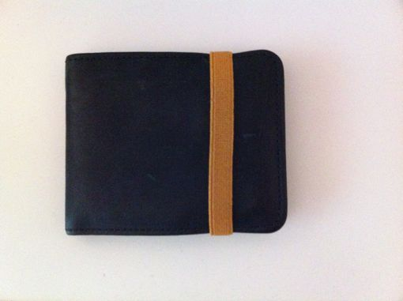
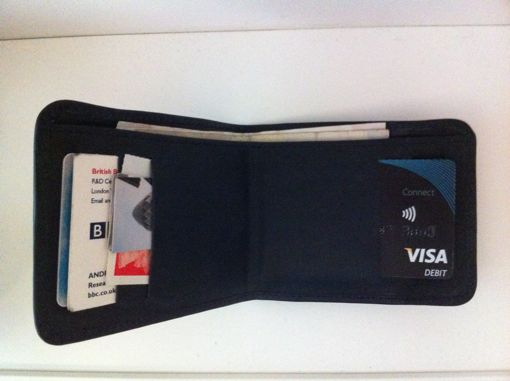
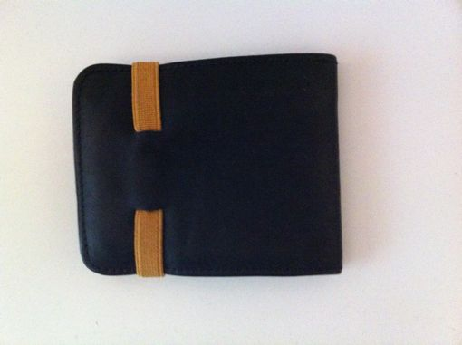

Assignment #1.1: Good Design



The well-designed artifact is this wallet. It's made of leather which is soft and tactile to hold. The elastic band is both functional, since it keeps the wallet closed securely and aesthetically pleasing due to its mustard contrast colour and texture.
The four card slots each hold a single card, this constraint ensures that I can't carry too many cards which would make the wallet bulky.
The break in the band at the back means that I always know which side my transport card is which helps when scanning it through the readers at the train station.